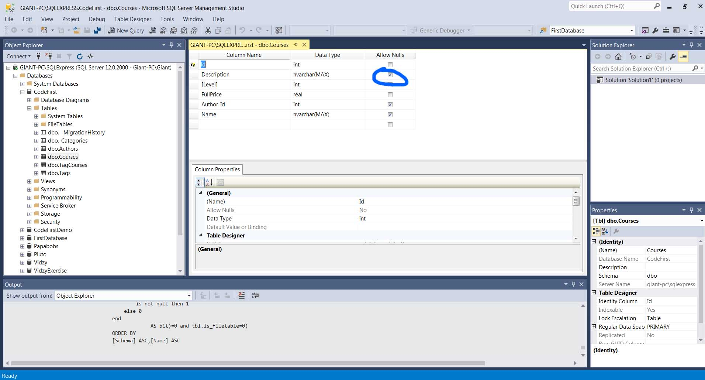
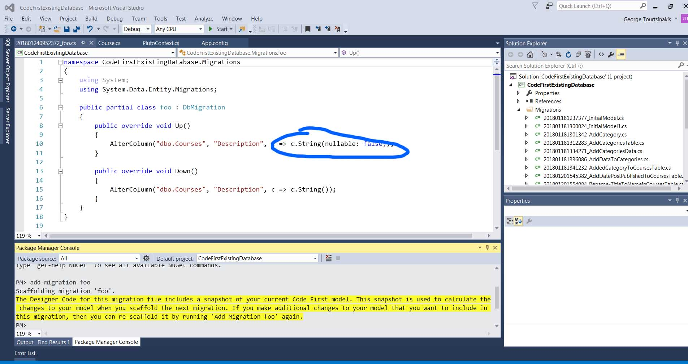
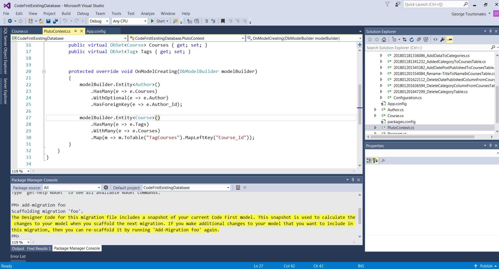

Let's say we have a nullable convention like shown here.  We want to override this convention and make sure that every course has a description. We go to CodeFirstExistingDatabase at Course class.
[Required]
public string Description { get; set; }
Also we need using System.ComponentModel.DataAnnotations;
Back to package manager console to add the migration and we see what the migration created. 
If we want this change we apply the migration by updating database.
If you have a class Course the table name must be Courses. You can define the Schema also if it isn't in dbo.
[Table("Courses").Schema ="catalog"]
public partial class Course
The convention assumes the property is the same with the column. If you want to use different table name and different type you wil have the following code.
[Column("sName",TypeName="varchar")]
public string Name {get; set;}
The convention assumes that if you have a property Id or the nameo of the class plus Id it will be the primary key. It s an integer and identity column. If we have something like ISBN we need to tell entity framework that this property will be the Id. Since the value of ISBN is not generated by the database we need to use Database Generated Values. It has three options :
[Key]
[DatabaseGenerated(DatabaseGeneratedOption.None)]
public string Name {get; set;}
This means we will have more than 1 key, we will aply Key in both of them and column order.
public class OrderItem
{
[Key]
[Column(Order = 1)]
public int OrderId{get;set;}
[Key]
[Column(Order = 2)]
public int OrderItemId{get;set;}
}
A column is nullable if property is nullable. We need to tell entity framework that a column must not be nullable. It 's just an annotation. It doesn't stop you to have it null in your C# but you will get exception error.
[Required]
public string Name {get; set;}
If you want to change the length of your column use Maxlength.
[MaxLength(255)]
public string Name {get; set;}
You can add an Index by simply using Index keyword. If you want to ensure that you don't have two users, courses etc with the same name you amke them unique.
[Index(IsUnique = true)]
public string Name {get; set;}
If you have multiple indexes you need to specify the name of the index and order for the columns in the index.
[Index("IX_AuthorStudentsCount",1)]
public int AuthorId {get; set;}
[Index("IX_AuthorStudentsCount",2)]
public int StudentsCount {get; set;}
If you don't link these columns entity framework will create two columns one called Author_Id and another one AuthorId. We have two ways of achieving that.
public class Course
{
[ForeignKey("Author")]
public int AuthorId{get; set;}
public Author Author;
}
public class Course
{
public int AuthorId{get; set;}
[ForeignKey("AuthorId")]
public Author Author;
}
Let's say we have a nullable convention like shown here.
This is where we use Fluent API to override conventions in Enity framework. 
protected override void OnModelCreating(DbModelBuilder modelBuilder)
{
modelBuilder.Entity<Course>()
.Property(t => t.Description)
.IsRequired();
}
In the above we say at Course table make the property Description required.
To override a table in the database we can call the method ToTable().If you wa to change the table schema for this table we pass an extra argument.
protected override void OnModelCreating(DbModelBuilder modelBuilder)
{
modelBuilder.Entity<Course>()
.ToTable("tbl_Course","catalog");
}
To configure primary keys we use the HasKey method which takes a lambda expression.
protected override void OnModelCreating(DbModelBuilder modelBuilder)
{
modelBuilder.Entity<Book>()
.HasKey(t=>t.ISBN);
}
Again we use the HasKey method. In the lamda expression we use an anonymous object and supply the name pf properties.
protected override void OnModelCreating(DbModelBuilder modelBuilder)
{
modelBuilder.Entity<Book>()
.HasKey(t=>new{t.OrderId,t.OrderItemId });
}
First we call the property method whic htakes a lambda expression that defines the name of the property and then we chain another method HasColumnName.
protected override void OnModelCreating(DbModelBuilder modelBuilder)
{
modelBuilder.Entity<Course>()
.Property(t=>t.Name)
.HasColumnName("sName");
}
To change type of the column:
protected override void OnModelCreating(DbModelBuilder modelBuilder) { modelBuilder.Entity<Course>() .Property(t=>t.Name) .HasColumnType("varchar"); }We also have a method to change columns order.
protected override void OnModelCreating(DbModelBuilder modelBuilder)
{
modelBuilder.Entity<Course>()
.Property(t=>t.Name)
.HasColumnOrder(2);
}
We also have a method for keys that we don't want to be assigned automatically like Primary Key in data annotation.
protected override void OnModelCreating(DbModelBuilder modelBuilder)
{
modelBuilder.Entity<Course>()
.Property(t=>t.ISBN)
.HasDatabaseGeneratedOption(DatabaseGeneratedOption.None)
}
A method called IsRequired to not let nulls.
protected override void OnModelCreating(DbModelBuilder modelBuilder)
{
modelBuilder.Entity<Course>()
.Property(t=>t.ISBN)
.IsRequired();
}
A method called HasMaxLength.
protected override void OnModelCreating(DbModelBuilder modelBuilder)
{
modelBuilder.Entity<Course>()
.Property(t=>t.ISBN)
.HasMaxLength(255);
}
Set type to max:
protected override void OnModelCreating(DbModelBuilder modelBuilder)
{
modelBuilder.Entity<Course>()
.Property(t=>t.ISBN)
.IsMaxLength();
}
This where Fluent API shines over data annotations.From type 1 to Type 2.
Reverse direction.From type 2 to Type 1.
Examples :
modelBuilder.Entity<Author>()
.HasMany(a => Books)
Then we need the reverse order which represents that Books must have an author :
modelBuilder.Entity<Author>()
.HasMany(a => Books)
.WithRequired(c=> c.Author)
Also we can optionally specify a foreign key :
modelBuilder.Entity<Author>()
.HasMany(a => Books)
.WithRequired(c=> c.Author)
.HasForeignKey(c=>c.AuthorId);
If we change the properties in the Books class since we use lamda expressions
they will be automatically be updated in here. Also we can set cascade
on delete to false which means if you have an author and this author
have at least one book we shouldn't be able to dlete this author.
modelBuilder.Entity<Author>()
.HasMany(a => Books)
.WithRequired(c=> c.Author)
.HasForeignKey(c=>c.AuthorId)
.WillCascadeOnDelete(false);
modelBuilder.Entity<Customer>()
.HasMany(c => c.Orders)
.WithMany(p=> p.Customers)
.Map(m=>m.ToTable("CustomersOrders"))
You need to write this code only if you need to supply additional information
for this many to many relationship. If we had name of table that looked
strange we could override it.modelBuilder.Entity() .HasMany(c => c.Tags) .WithMany(c => c.Courses) .Map(m => { m.ToTable("CourseTags"); //Since we start from Course the left side is Course //The name of the left key is going to be CourseId m.MapLeftKey("CourseId"); //The name of the left key is going to be TagId m.MapRightKey("TagId"); });
modelBuilder.Entity<Course>()
.HasOptional(c=>c.Caption)
.WithRequired(c => c.Course);
So in general we start with the Has method and we continue with
the With method.
modelBuilder.Entity<Course>()
.HasRequired(c => c.Cover)
.WithRequiredPrincipal(c => c.Course);
When we have one-to-one relationship we must use With method to let entity framework know who is the parent
and who is the child. And reverse :
modelBuilder.Entity<Course>()
.HasRequired(c => c.Course)
.WithRequiredDependent(c => c.Cover);
Making many changes to your DbContext slowly it will make it big and hard to maintain. You will have to create a class for each congiguration class. In the below code all changes apply to Course class.
protected override void OnModelCreating(DbModelBuilder modelBuilder)
{
modelBuilder.Entity()
.Property(c => c.Name)
.IsRequired()
.HasMaxLength(255);
//Change max length for Description in Courses
modelBuilder.Entity()
.Property(c => c.Description)
.HasMaxLength(2000);
//Change Courses foreign key Author_Id to AuthorId
//And if an author has a course not let to be delete
modelBuilder.Entity()
.HasRequired(c => c.Author)
.WithMany(a => a.Courses)
.HasForeignKey(c => c.AuthorId)
.WillCascadeOnDelete(false);
//Change name of table TagCourses(was created in database automatically) to CoursesTag
modelBuilder.Entity()
.HasMany(c => c.Tags)
.WithMany(c => c.Courses)
.Map(m =>
{
m.ToTable("CourseTags");
//Since we start from Course the left side is Course
//The name of the left key is going to be CourseId
m.MapLeftKey("CourseId");
//The name of the left key is going to be TagId
m.MapRightKey("TagId");
});
//New table cover and relationship with Course
modelBuilder.Entity()
.HasRequired(c => c.Cover)
.WithRequiredPrincipal(c => c.Course);
base.OnModelCreating(modelBuilder);
}
You will have to create a new folder in your project and call it EntityConfigurations. We will create there a class NameOfEntityConfigurations. And the above will look like this
using System;
using System.Collections.Generic;
using System.Data.Entity.ModelConfiguration;
using System.Linq;
using System.Text;
using System.Threading.Tasks;
namespace FluentAPI.EntityConfigurations
{
public class CourseConfiguration : EntityTypeConfiguration
{
public CourseConfiguration()
{
Property(c => c.Name)
.IsRequired()
.HasMaxLength(255);
//Change max length for Description in Courses
Property(c => c.Description)
.HasMaxLength(2000);
//Change Courses foreign key Author_Id to AuthorId
//And if an author has a course not let to be delete
HasRequired(c => c.Author)
.WithMany(a => a.Courses)
.HasForeignKey(c => c.AuthorId)
.WillCascadeOnDelete(false);
//Change name of table TagCourses(was created in database automatically) to CoursesTag
HasMany(c => c.Tags)
.WithMany(c => c.Courses)
.Map(m =>
{
m.ToTable("CourseTags");
//Since we start from Course the left side is Course
//The name of the left key is going to be CourseId
m.MapLeftKey("CourseId");
//The name of the left key is going to be TagId
m.MapRightKey("TagId");
});
//New table cover and relationship with Course
HasRequired(c => c.Cover)
.WithRequiredPrincipal(c => c.Course);
}
}
}
How to organize these changes . Alhabetically and :
Finally we need to reference the configurtation class.
using FluentAPI.EntityConfigurations;
using System.Data.Entity;
namespace FluentAPI
{
public class FluentAPIContext :DbContext
{
public virtual DbSet Authors { get; set; }
public virtual DbSet Courses { get; set; }
public virtual DbSet Tags { get; set; }
protected override void OnModelCreating(DbModelBuilder modelBuilder)
{
modelBuilder.Configurations.Add(new CourseConfiguration());
}
}
}
Database annnotations is simpler but more limited. Fluent API is stronger and you can do
more stuff with it. Also Fluent API is more cleaner since it doesn;t pollutes
the class itself.
Do not mix these two approaches.